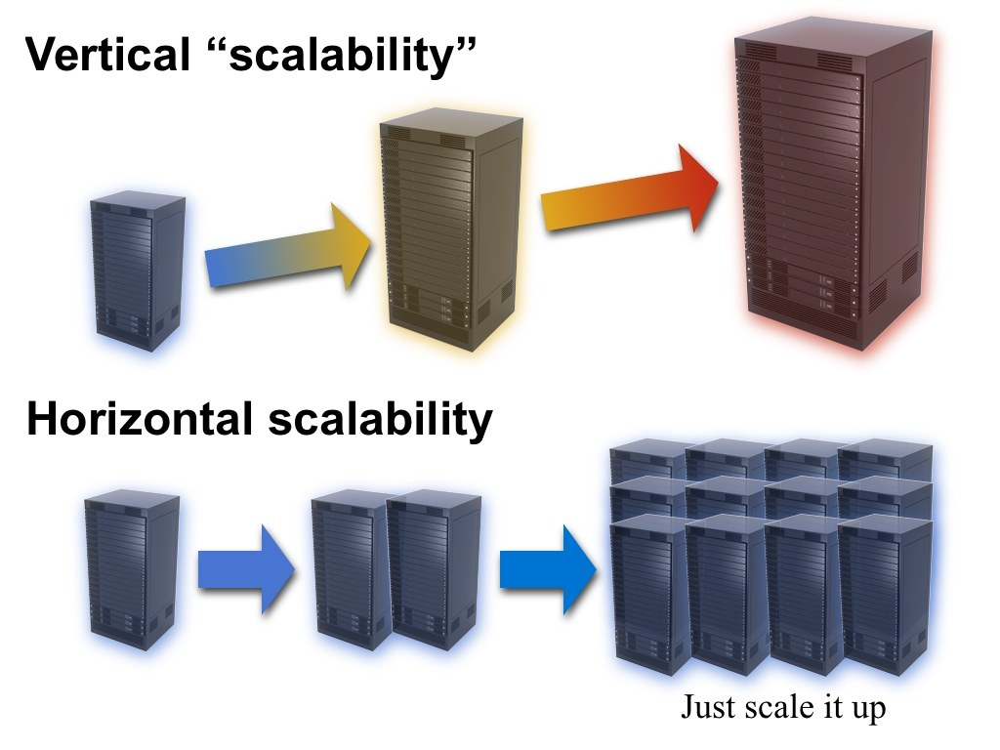

Node.js
Applications temps réel et performantes
Plan (théorique)
- Jour 1 : Node et son écosystème
- Jour 2 : Application web
- Jour 3 : Utilisation avancée
Présentation
Node.js c'est d'abord du…
JavaScript
- Langage de facto du web
- Des inconvénients :
- Typage dynamique (conversions hasardeuses)
thisindomptable
- De sérieux atouts :
- Typage implicite
- Des interpréteurs hyper efficace
- Asynchrone par nature
- Vivant (EcmaScript)
Node.js c'est aussi…
V8
- Interpréteur JavaScript de Chrome
- Développé par Google
- Open-source
- Très performant (mais la course reste ouverte)
Node.js multiplateforme ?
libuv
- Couche d'abstraction en C
- Multi OS
- En charge de l'event loop
- Aussi utilisée hors node (luvit)
Installer Node.js
- Niveau système : Téléchargement sur nodejs.org
- Attention à
npm install -g
- Attention à
- Niveau utilisateur : nvm, nave
- Ne nécessite pas npm ou node pour être installé
- Basculer entre les versions de node
- Pas de permissions privilégiées
- Sous Windows : nvm-windows
- Attention :
nvm install 10.13.0au lieu denvm install 10
- Attention :
Node.js Release Working Group
Pair = LTS
Le REPL
node
Read, Evaluate, Print, Loop
> 1+1
2
> 'node'.toUpperCase()
'NODE'
- Auto-complétion (idéal pour explorer les APIs)
- Les modules du core sont pré-chargés
- Visualiser l'asynchrone
> setImmediate(() => console.log('hello'))
…
> hello
1+1
2
Exécuter un script
// hello-world.js
const world = 'world';
console.log(`Hello, ${world}`);
node hello-world.js
Hello, world
Modules et npm

- un outil en ligne de commande
- inclus dans node
- un gigantesque dépôt de modules JS
node -v
npm -v
npm : rechercher
npm search- Pas très pratique
- Google "site:npmjs.com" + recherche (évite les tutos)…
- Pas forcément aussi pertinent
- http://npms.io
- https://npmjs.com
- Même résultats que
npms.io
- Même résultats que
npm : installation
npm add $moduleName
- Installe dans le dossier
node_modulesle plus proche (en remontant) - Persiste la dépendance dans
package.json
const _ = require('lodash')
- Va chercher dans le dossier
node_modulesle plus proche (en remontant)
Le package-lock.json décrit l'arbre des dépendances
Modules : CommonJS
- Charger un module :
require(cheminRelatif) - Définir un module :
module.exports = publicAPI
// monmodule.js ou monmodule/index.js
module.exports = {
hello () { return "Hello, world" }
}
- un module = un fichier ou un dossier
// script.js
const mod = require("/path/to/monmodule") // .js facultatif
console.log(mod.hello())
Modules : CommonJS
- Définition alternative :
exports.name = something
// monmodule.js ou monmodule/index.js
exports.hello = function () {
return "Hello, world"
}
// script.js
const mod = require("/path/to/monmodule") // .js facultatif
console.log(mod.hello())
Modules : Singleton
// premier chargement = lecture et exécution
const mod1 = require('/path/to/monmodule')
// pas d'exécution, le module est caché
const mod2 = require('/path/to/monmodule')
mod1 === mod2 // true
Modules : Scope
Tout se passe comme si la fonction require englobait le code du module dans une fonction dédiée :
function require (path) {
let module = {
id: '…',
exports: {},
…
}
let exports = module.exports
evalScript(path)
return module.exports
}
Les modules du cœur
require("…/fichier.js")= persorequire("module")= core ou npm- cf. nodejs.org/en/docs/
Les principaux
- Fichiers :
fs,path - Réseaux :
http,net - Système :
os,child_process - Utilitaires :
util
ES Modules
// export (module.mjs)
const life = 42
export default life
export const named1 = 1
export function named2() {
return 2
}
// import
import defaultExport from 'module'
import { named1, named2 as renamed } from 'module'
import * as object from 'module'
import defaultExport, { named1 } from 'module'
- ES6 : symboles connus au parsing
- CommonJS : symboles connus au runtime
La syntaxe ES6 est cool…
…mais tout l'écosystème n'est pas forcément adapté :
- Support encore expérimental
- Extension .mjs
On peut utiliser le destructuring et les shorthand properties avec require et exports :
// export
module.exports = { named1, named2 }
// import
const { named1, named2: renamed } = require('./module')
Modules : packages
- Méta-données descriptives (publication, recherche, contributeurs)
- Méta-données techniques (npm, version, dépendances)
// package.json
{
"name": "monmodule",
"version": "1.0.0",
"main": "index.js",
"dependencies": {
"sum": "^1.0.0"
}
…
}
npm init
Dépendances : installation
package.json= attendu généralpackage-lock.json= instantané figé
Commandes utiles :
npm add [--save-dev] $moduleajoute une dépendancenpm install [--production]installe les dépendancesnpm upgrade [$module]met à jourpackage-lock
npm : versions
Respecter le semantic versioning :
npm version "major"|"minor"|"patch"
- Mnémo : BFf (Breaking Feature fix)
Dépendances : versions
npm utilise le semantic versionning :
~1.5.3(équivalent) ~= 1.5.x^1.5.3(compatible) ~= 1.x
BADASS → immunisé au "dependency hell"
Attention aux sous-dépendances qui se mettent à jour !
- Bien commiter
package-lock.json, qui rend les installations reproductibles
Dépendances : binaires
On peut écrire des modules pour Node.js en C++ :
- Performances
- Réutilisation
- Bindings avec d'autres langages (Rust, Python, etc.)
Dépendances : binaires
#include <nan.h>
using namespace v8;
NAN_METHOD(Method) {
NanScope();
NanReturnValue(String::New("world"));
}
void Init(Handle<Object> exports) {
exports->Set(NanSymbol("hello"), FunctionTemplate::New(Method)->GetFunction());
}
NODE_MODULE(hello, Init)
npm : toujours plus
Exit les favoris
npm home $module
Exit les task runners
// package.json
{
"scripts": {
"hello": "echo hello"
}
}
npm run hello
Hooks pre et post
APIs asynchrones
Paradigmes
Multi-tâche
- Vraiment parallèle (sauf si pas de CPU disponible)
- Risque d'accès simultanés à la mémoire
Concurrence
- Les traitements synchrones sont bloquants
- On traite le retour dès que le système est disponible
Bloquant
- On bloque tout pendant que la base de données bosse
How Node.js works on a single thread

Callbacks
- On passe à la fonction asynchrone la fonction qui devra être exécutée quand le résultat sera prêt
- Format choisi par Node.js
Signature typique d'une fonction asynchrone par callback :
function foo (...args, callback) {
// When an error occurs:
callback(err)
// When a result is available:
callback(null, result)
}
- error-first callbacks (errback) : une erreur est la seule donnée qu'on est sûre de pouvoir recevoir
Flow control
Appels en série : "Pyramid of doom"
fs.readFile(file1, (…) => {
fs.readFile(file2, (…) => {
fs.readFile(file3, (…) => {
// Dafuq?
});
});
});
Appels en concurrence : complexe…
let pending = 42;
…
Pour éviter le callback hell : async
Promise
Manipuler la représentation de la valeur future au lieu d'attendre sa disponibilité
- Standard EcmaScript, support natif dans Node
- Stateful
- Chaînable
var promiseOfBuffer = read("file")
// .then = when value really available
promiseOfBuffer.then(callback) // callback(buffer)
// this returns the promise of callback(buffer)'s return value
.catch(onError) // onError(err)
// this also returns a promise…
Aide à l'orchestration : Promise.all(promises)
Promise 101
Beloved features des promesses :
- Chaînage (transformations successives)
- Propagation d'erreur
ES2017
- Fonctions capables de s'interrompre et redémarrer
- Intégration native des promesses
async / await
const incr = async (promise) {
const value = await promise
return value + 1
}
async function main () {
console.log(await incr(getFromHTTP()))
}
main()
Attention à series vs parallel : on n'est pas exempté de Promise.all !
Streams
fs.createReadStream, fs.createWriteStream, http.Request, http.Response…
Évènements
- Classe
EventEmitter - Exemples : socket (client http, serveur http, https, udp…), streams, process…
emit= exécuter les listeners
ee.on("eventName", handler); // === ee.addListener
ee.removeListener("eventName", handler);
ee.removeAllListeners("eventName");
ee.once("eventName", …); // your best friend against memory leak
ee.emit("eventName", arg1, arg2...);
Attention à l'événement spécial error
Quelle API asynchrone pour quel usage ?
- Une question, une réponse : callback ou promesse
- Bare metal : callback
- En général : promesse
- Flux d'info dans l'ordre : stream
- Flux d'info désordonné : event
HTTP
Module http
const http = require('http')
http://nodejs.org/api/http.html
createServer : création de serveur HTTP
http.createServer((incomingMessage, serverResponse) => {})
request : effectuer une requête HTTP
const clientRequest = http.request('http://www.google.com')
Préférer le module axios ou node-fetch
Un serveur HTTP simple
Chaque requête passe par le handler
function handler (req, res) {
// req instanceof http.IncomingMessage
// res instanceof http.ServerResponse
res.setHeader('content-type', 'text/plain')
res.write(`You visit ${req.url}`)
res.end()
}
- La request représente les données envoyées par le client
method,url,headers, données POST (readable stream)
- La response représente la réponse qui sera envoyée
- définition des headers
- envoi du contenu (writable stream)
Attention aux calculs bloquants !
- Requête client = empilée dans l'event loop
- Bloquer = aucune requête n'est traitée pendant ce temps
- Elles continuent de s'empiler
Apprenez à VRAIMENT craindre le code bloquant
Aller plus loin
Le module http est minimaliste
There is a module for that
- Routage :
node-simple-router,connect,express… - Cookies :
cookie(+res.setHeader),connect,express… - Formulaires :
formidable,busboy,connect,express…
Simplifions-nous la vie
Express
Express
Micro-framework pour les applications web Node : http://expressjs.com/
const app = express();
app.get("/", function (req, res) {
// req: http://expressjs.com/4x/api.html#request
// res: http://expressjs.com/4x/api.html#response
});
const server = http.createServer(app);
Le routage
Route = méthode + url
app.méthode(url, handler)
Format
// Simple
app.get("/hello/world", …)
// Parameter
app.get("/hello/:world", …) // req.params.world
// Complex URL using RegExp
app.get(/^hello\/(.*)$/, …) // req.params[1]
// Parameter constraint
app.get("/hello/:world([^\\s+])", …)
Middlewares
Un middleware s'intercale dans le traitement d'une route.
function log (req, res, next) {
console.log(new Date, req.method, req.url);
// Async: call next or chain is broken!
next();
});
Ils peuvent être utilisés au niveau de l'application :
app.use(log);
…
Ou au niveau d'une route seulement :
app.get("/logged", log, function (req, res) { … });
app.get("/unlogged", function (req, res) { … });
Middlewares standard
Express ne fait rien à part le routing, les middlewares vont assurer les fonctions auxiliaires :
- Formulaire :
body-parser(pas d'upload),multer - Logging :
morgan(ce nom…) - Serveur statique :
serve-static,serve-index - Cookies :
cookie-parser(req.cookies,req.signedCookies,res.cookie()) - Sessions :
express-session - Compression GZip :
compression - Sécurité CSRF :
csurf - etc… https://github.com/senchalabs/connect#middleware
Architecture classique
Arborescence d'une application Express
.
├── app.js
├── config/
├── data/
├── lib/
│ ├── routes/
│ └── session-store.js
├── package.json
├── public/
├── server.js
└── views/
└── layout.html
{
"main": "app.js",
"scripts": {
"start": "node server.js",
"watch": "nodemon -i public server.js"
}
…
}
Alternatives
Sails.JS
- "Full stack"
- Scaffolder inspiré de RoR (yeoman like)
- Blueprints pour faciliter le CRUD
- ORM avec Waterline (mongoose like)
- Routes HTTP et/ou WebSocket avec JWR
Hapi
- Configuration over code
- Coup de cœur pour la lib de validation : Joi
Alternatives : Koa l'héritier
- Support asynchrone natif
- Un objet
contextmieux organisé
const Koa = require('koa');
const app = new Koa();
app.use(ctx => {
ctx.body = 'Hello Koa'; // Response
});
app.listen(3000);
- Routing avec
@koa/router - Parsing de requête avec
koa-body - Sessions avec
koa-redis - Sécurité avec
koa-helmet koa-logger,koa-locales,koa-views…
Bases de données
Node et les bases de données
There's a module for that
sqlite3mysqloracle(désolé)pg(+pg-native)mongodbcradle(CouchDB)redis(+hiredis)- …
MongoDB
Base orientée documents.
- La star des bases NoSQL
- Le meilleur choix ?
- Syntaxe JavaScript
- Modélisation polyvalente (documents, schemaless) (*)
- Scalable facilement
- Performances : attention ! (**)
- (*) Utiliser Mongoose
(*) Attention : ne pas réfléchir relationnellement en NoSQL
(**) Utiliser l'aggrégation sans cluster = suicide
Redis
Base clé/valeur extrèmement rapide
- Toutes les données chargées en mémoire
- Hélas la RAM c'est cher :(
- Données structurées et opérations complexes
- Transactions
- Scripts
- Cluster
// npm add ioredis
const Redis = require('ioredis')
const client = new Redis()
client.get('toto') // Promise<String>
Redis : toujours plus !
La boite à outils de la scalabilité !
- Synchroniser des opérations à travers un cluster :
PUB/SUB (PUBLISH,SUBSCRIBE) - Pool de workers pour déléguer les calculs :
PUSH/PULL (RPUSH,BLPOP)
PUB/SUB
// Subscribe
client.subscribe('channel') // Promise<number>
client.on('message', (channel, message) => { … })
// Publish
client.publish('channel', 'message')
PUSH/PULL
// Worker
const nextTask = () => client.blpop('jobs').then(work)
const work = job => {
… // TODO push result to another queue for REQ/REP
nextTask()
}
// Master
client.rpush('jobs', job)
// TODO pop result from another queue for REQ/REP
Tests Unitaires
Tester ?
- Ça sert à débusquer les bugs
- à documenter son API
- à pouvoir refactorer tranquille
C'est long à écrire
On appelle ça un investissement
Quels types de tests ?
- Tests unitaires
- On teste des modules séparément
- On se concentre sur les API
- Tests fonctionnels
- On teste l'application au complet
- On vérifie les fonctionnalités
- Tests d'intégration
- On teste tout l'écosystème
- Souvent avec de vraies jeux de données
Test runner
Le "test runner" est l'outil qui va prendre nos fichiers de test et les exécuter, et indiquer le résultat des tests.
- API spécifique injectée
- génération de rapports (Jenkins)
mocha est un choix populaire pour Node.
# CI
mocha --reporter xunit --check-leaks
# Dev
mocha --reporter list --check-leaks --watch --growl
Note : --growl peut requérir un outil tiers
Assertions
- Un test échoue si son code plante
- Assertion = plante si une condition n'est pas vérifiée
- lecture agréable
- message d'erreur utilisable
Chai offre une syntaxe sexy (expect ou should) :
expect(3.14)
.to.be.a("number")
.and.to.be.below(4)
.and.to.be.above(3);
npm test
./node_modules/.bin/mocha: long, erreurs possibles- Installation globale : une étape de plus
Des solutions :
Makefile: standard, mais Mac/Linux- scripts npm : devient standard, multi-plateforme
{
"scripts": {
"test": "mocha -R spec -G --check-leaks test/"
}
}
Tester son code asynchrone
Une fonction asynchrone rend la main immédiatement !
it("should do some work", function () {
doSomeWork(err => expect(err).toNotExist());
// I'm here before the assertion
});
// And then I'm here, test is finished, assertion not checked
Mocha a pensé à tout :
- La fonction de test prend une fonction en paramètre ?
- Mocha attend l'appel de ce error-first callback
- La fonction de test retourne une Promise ?
- Mocha attend la résolution de la promesse
Mocks, spys, injection…
sinon- Pour simuler une API
- Pour "espionner" une fonction (existante ou nouvelle)
rewire- Pour remplacer des variables locales à un module
proxyquire- Pour hijacker les appels à
require()
- Pour hijacker les appels à
rewire/proxyquire + sinon = possibilier de remplacer n'importe quelle méthode privée d'un module par un mock surveillé
Mocks, spys, injection…
// module-a-tester.js
const client = require('./db')
exports.addUser = name => …
// on remplace le client par un faux
const sinon = require('sinon')
const client = {
insert: sinon.stub().returns(Promise.resolve({ id: 42 }))
}
// on injecte cette dépendance
const proxyquire = require('proxyquire')
const mod = proxyquire('../module-a-tester', {
'./db': client
})
// on peut tester
expect(mod.addUser('toto')).to.eventually.have.property('id', 42)
expect(client.insert.insert).to.equal(true)
ES Modules
Problème 1 : exécution des tests
- Le plus simple :
esm
npm add esm
mocha -r esm
# Note: '"esm": "all"' peut être nécessaire dans le package.json
- Pour garder le mode natif, il faut bidouiller un peu
- Flag passé avec
NODE_OPTIONS - Mocha ne charge que les
.js, donc il faut écrire son propre point d'entrée chargeant les.mjs
- Flag passé avec
ES Modules
Problème 2 : mocks
- Par nature les modules natifs ne sont pas "mockables"
- Utiliser l'injection de dépendance
import foo from './foo';
// Can't mock 'foo'
export default value => foo(value);
// Can inject a mock: bar(value, myFoo)
export default (value, _foo = foo) => _foo(value);
// A bit trickier but nicer when multiple deps: bar(value, { foo: myFoo })
export default (value, { foo: _foo = foo } = {}) => _foo(value);
- Autre option : passer par
babel
npm add babel-plugin-rewire @babel/preset-env
mocha --compilers js:@babel/register --plugins rewire --presets env
Tests et bases de données
Penser à préparer ses données de test : before, beforeEach
define('my feature', () => {
before(cb => loadFixtures(cb)) // or return a promise
// shorter: before(loadFixtures)
})
Faire le ménage en partant
after(cb => cleanData(cb)) // or return a promise
// shorter: after(cleanData)
On a vraiment pas envie de cibler la BDD de prod
→ env-test + mocha.opts
Configuration
Environnements
Le standard de facto : variable d'environnement NODE_ENV.
Valeurs usuelles : development ou production.
NODE_ENV="development" node "server.js"
Dans le script Node :
process.env.NODE_ENV
// Express
app.get("env")
- Express : comportements spécifiques si
production- ATTENTION : par défaut =
development
- ATTENTION : par défaut =
- Idée : configuration fonction de l'environnement
Modules JSON
require comprend le JSON automatiquement
module.exports = require("./config/config.json");
Configuration dépendant de l'environnement
module.exports = require("./config/config-" + process.env.NODE_ENV + ".json");
Environnement + valeurs par défaut
module.exports = Object.assign({},
require('./config/defaults.json'),
require(`./config/${process.env.NODE_ENV}.json`)
)
Aller plus loin
Le module config : convention over configuration
- Configuration accessible partout :
require('config') - Gère de multiples formats
- Surcharge à plusieurs niveaux
config/
default.json # Options par défaut
development.yml # Environnement de développement
production.yml # Environnement de production
test.yml # npm test
local.ini # Non versionnée: configuration du host
Surcharge par variables d'environnement ou ligne de commande… La totale !
WebSockets
Les WebSockets
- "Temps réel"
- Full-duplex (requêtes & réponses se croisent)
- Protocole basé sur HTTP
Connection: Upgrade
Upgrade: websocket
Excellent support navigateur (IE ≥ 10, Android ≥ 4.4)
Mais attention aux proxies !
Les WebSockets

Client WebSocket : l'API DOM
var socket = new WebSocket('ws://url');
socket.send('some data');
socket.addEventListener('message', (event) => {
console.log(event.data); // string
})
- pas de distinction des messages (simples strings)
- événement "open", "message", "close" et basta
- un peu limité…
Client WebSocket : côté Node
Via ws ou uws@10.148.1 (normalement plus performant)
const WebSocket = require('uws') // or ws
socket.send('some data')
socket.on('message', event => {
console.log(event.data) // string
})
- Peut aussi servir à implémenter un serveur WebSocket
Socket.io à la rescousse !
API de messaging basée sur EventEmitter
io.on("connection", (socket) => {
socket.emit("hello", ...args);
socket.on("hello-response", (...args) => { /* … */ });
});
Multiples transports si WebSocket ne passe pas :
- Ajax Long Polling
- WebSocket
- On garde le long polling si WS ne marche pas
Du temps réel dans son application
Réduire le lag
- Requête HTTP = headers + body
- Message WebSocket = seulement le message
Notifications
- Recevoir des événements du serveur
// Broadcast
io.emit("flash-news");
Socket.io : rooms & namespaces
Regrouper les sockets avec les rooms
socket.join("private");
io.to("private").emit("event");
Séparer les services avec les namespaces
// server
io.of("/chat").on("connection", …);
io.of("/news").on("connection", …);
// client
const chatSocket = io.connect("…/chat");
const newsSocket = io.connect("…/news");
Phase d'authentification
Filtrer les connexions avec les middlewares
io.use((socket, next) => {
next(error) // refuse connection
})
À l'origine une requête HTTP, qui reste disponible :
socket.request
socket.request.headers
// etc…
// addition:
socket.request.res // http://git.io/Fz1y
Couplage avec Express
HTTP ≠ WebSocket
Dans un handler Express on n'a aucun lien avec le socket
Établir le lien : la session
Handshaking → HTTP → headers → cookies → session
const sessionMiddleware = expressSession(…)
app.use(sessionMiddleware)
// …
io.use((socket, next) => {
sessionMiddleware(socket.request, socket.request.res, next);
// socket.request.session = user's session
})
Qualité
La qualité
- fonctionnalité, expérience utilisateur…
- fiabilité (tests unitaires, debugging, intégration continue)
- performances (profiling)
- maintenabilité (formatage)
- portabilité assurée par Node
Debugging avec les Chrome DevTools
Node ≥ 6.3 : node --inspect
node --inspect [--debug-brk] server.js
- Copier-coller l'URL dans Chrome
- Encore plus fort si Chrome ≥ 55
Node ≤ 6.3 : node-inspector
npm install -g node-inspector
node-debug server.js
Profiling
Avec les Chrome DevTools
- Node ≤ 6.4.0 :
node-inspector - Node ≥ 6.9.0 :
node --inspect - Entre les deux, désolé
Onglet Profiles des dev-tools : Profiling CPU, Heap Snapshot, Allocations over time…
En ligne de commande
Formatage
- Configurable (contrairement à
jslint) - Extensible (plus que
jshint) - Règles sémantiques ou de style
- Peut reformater le code avec
eslint --fix
npm add --save-dev eslint
npx eslint init
npx eslint .
# Ajouter aux scripts npm : "eslint ."
no-unused-var, no-undef, import/no-extraneous-dependencies, prefer-arrow-callback, no-var, prefer-const, prefer-rest-params…
Formatage
prettier pour JS/JSX/TS/CSS/MD…
- « Prettier is an opinionated code formatter »
- Quelques options quand-même : tabulations, point-virgule, guillemets…
- Pas de validation mais une réécriture
- à brancher sur le ctrl+s ou un hook precommit
npm add --save-dev prettier
npx prettier --use-tabs --no-semi --single-quote --trailing-comma es5 .
- Avec eslint :
prettier/prettier - Pour marier les deux : prettier-eslint + prettier-eslint-cli
Performances
Scalabilité

Cluster
Profiter des multiples cœurs du CPU :
// server.js (worker)
// avant : server.listen(3000, () => …)
// après :
require('lipstick').listen(server, 3000, () => …)
// cluster.js (master)
require('lipstick')('./server.js', { port: 3000 })
Mettre plusieurs machines en cluster :
- Nginx
- HAProxy
Ça scale pas !
Mémoire non partagée : attention aux états globaux
Mais je n'ai pas de variables globales !
Ah oui ?
- Sessions ?
- Liste des sockets connectés ?
- D'autres états cachés ?
Sessions ? Redis.
Synchroniser les données : base de données
Redis en tant que base de données ultra-rapide
var session = require("express-session");
var RedisStore = require("connect-redis")(session);
app.use(session({
store: new RedisStore(options),
secret: "…"
}));
socket.io ? Redis !
Synchroniser les états : PUB/SUB
Redis en tant que serveur PUB/SUB léger
SUBSCRIBE "channel" # client 1
SUBSCRIBE "channel" # client 2
PUBLISH "channel" "hello"
Adaptateur dédié à socket.io (stockage + PUB/SUB)
var ioRedis = require('socket.io-redis');
io.adapter(ioRedis({
"host": "localhost",
"port": 6379
}));
Anything ? Redis \o/
On l'a déjà vu : c'est la boite à outils de la scalabilité.
- Synchroniser des états :
PUBLISH/SUBSCRIBE - Déléguer des calculs :
RPUSH/BLPOP - Données volatiles :
EXPIRES - Données souvent accédées : Ultra-rapide
- Beaucoup de données : Nope (la RAM c'est cher)
Gestion de la mémoire
- Profiler la mémoire
- Limiter la heap (
Buffer) - Éviter les memory leak
- Gaffe aux
EventEmitter
- Gaffe aux
Conclusion
Bonnes pratiques
- Éviter la Pyramid of Doom
- flow control, Promise…
- Écrire du code scalable
- Pas de variables globales
- Redis
- Surveiller les performances
- Bien packager son application
{"private": true}
- Ne pas réinventer la roue !
Quand choisir Node ?
Node peut tout faire
Quand ne pas choisir Node ?
- On n'est pas à l'aise avec JavaScript
- On a des calculs "lourds" qu'on ne peut pas déporter
- nodejs.org/api
- npms.io
- expressjs.com/…/database-integration
- redis.io/commands
- echojs.com
- reddit.com/r/javascript
- github.com/sindresorhus/awesome-nodejs
- github.com/byteclubfr
- articles ES6 fr
- Controlling the Node.js security risk of npm dependencies
- C'est quoi this
Plus tous les liens disséminés dans les slides
(paf, obligé de les relire)
À bientôt !
@naholyr | @Delapouite | @t8g